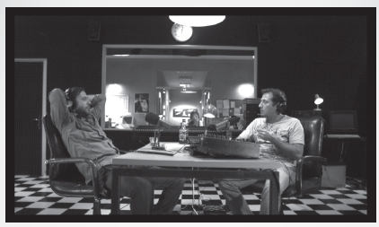
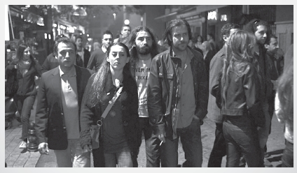

BURAK KAN1
Benim Kaybedenler Kulübü filmi maceram, Mehmet Ada Öztekin’i ve Tolga Örnek’i “Devrim Arabaları” projesinde tanımamla başladı. Filmden sonra Tolga ile pek görüşmek de Mehmet ile ara sıra telefonlaşıp bir kaç kez de görüştük. 2010 yılı içerisinde Tolga’nın bir başka filmi için görüşmeye gittiğimde beni görüntü yönetmeni olarak düşünmemişlerdi ancak hem çalışmak istedikleri malzeme hem ekip açısından üzerine konuşmuştuk. Sonrasında bu proje ileri bir tarihe ötelendi ve beni: “gel bak Kaybedenler Kulübü’nü çekiyoruz” diye aradı. Hikaye tam olarak burada başladı.
2010 yılının yaz başıydı: Tolga’nın ofisinde buluştuk ve filmin senaryosunu aldım, ilk okuma faslı aslında biraz kurudur genelde lakin okudukça kafanızda kendi hikayenizi kurarsınız. Bazı senaryolar sizi görsel olarak da çağırır, renkleri görür, müziği duyarsınız... Kaybedenler Kulübü de öyleydi.
Sonrasında Tolga ile defalarca görüştük ve filmin aslında kücük bağımsız görsel parçaları olabileceğine, kimi sahnelerin tamamen kendi rengi ve hareketiyle başlayıp bitebileceğine karar verdik. Çok fazla efekti, uçtusu kaçtısı yoktu ve eğer buna ihtiyaç varsa da mekanik çözümlerle bunu yapabilmeyi tercih etmemiz konusunda fikir birliğine vardık. Belki kimi yerleri siyah beyaz kimi yerleri stencil olabilecek hale getirmek belki başta konuştuğumuz ama şu an uzağında kaldığımız bir çizgi roman durumunu, kare bölmelerle ve kurguyla yakalanabilecek bir tarz için konuşmaya başladık.
Ben filmde kullanmayı düşündüğü müzikleri istedim, okurken ya da düşünürken fazlaca açıyor bu yöntem önümü. Birde tabii Tolga’nın şehri zaman geçişlerini anlatmakta kullanmak istediği ‘time lapse’zaman atlamalı çekim meseleleri vardı ki burada aslında cesurca hatta fazlaca cesurca bir kararla filmin kimi görsel parçalarını hatta kısa sahnelerini başka başka ellere emanet etmeye karar verdik.
Ben mezunu olduğum MSGSÜ Fotograf Bölümü’nden arkadaşım ve halen aynı bölümde hocalık yapan Ozan Bilgiseren’i aradım; fotograf estetiğinin ,temel fotografik yeteneklerin bizim işimize yardımcı olabileceğini daha önce hiç bir şekilde örneği yapılmayan bir işe öğrencilerden doğrudan filme dahil olmalarının mümkün olup olmayacağını konuştum,bölüm başkanı Yusuf Murat Şen, Nihal Kafalı’nın destekleri, araştırma görevlisi Volkan Kızıltunç’un azimli çalışmalarıyla artık fotograf bölümünden bizimle görsel işbirliği yapacak yirmiden fazla genç arkadaşımız vardı. Okulda çeşitli toplantılar yapıldı, özellikle şehrin pek bilmediğimiz yüksek binaları ve buradan seçilen panaromalar ile malzeme seçimi,kullanımı, biraz daha da sonraları fotografçıların pek alışık olmadığı hareketli kamera kullanımı ile ilgili ufak tefek birkaç görüşme de yaptık. Bu görüşmeler gündemde olan yüksek çözünürlüklü video görüntü çekebilen kameraların dünyasına bizi adım adım yaklaştırdı, zaten bizde çekim için HD 4K çözünürlükte bir redone kameraya karar vermiştik. Ozan ve bölümdeki arkadaşlarla envanterimizi çıkarttık, bu safhada Ozan bizi Canon ve Erkayalar ile işbirliği için masaya oturttu, keyifli bir malzeme sponsorluğu aldık, pek çok fotoğrafçının hayalini kurduğu 300mm 2.8, 400mm 2.8, 800mm tele lensler, extenderlar,Canon 5D Mark 2 ve 1D Mark 4 makinaları da envanterimize dahil ederek çekimlerimize başladık. Bir yandan adeta uçak gemisi güvertesindeki hummalı va dakik ve de hata kabul etmeyen çalışmaları andıran bir tempoda MSÜ Fotograf Bölümü’nün çalışmaları ve organizasyonu, prodüksiyon elemanlarının koşturmaları, bizim malzeme testlerimizi, ışık hazırlıklarımız ile filme iyice yaklaştık.

21 günlük çekimin yaklaşık 10 günü stüdyo ve dekor ortamında gerçekleşecekti. Bu hem kontrollü hemde riskli bir durum benim için, ses, ışık zaman gibi kontrolleri sağlayabiliyorsunuz, hava koşulları etkilemiyor zira. Yazı hazırlıkla geçirip ekim ayına ulaşmıştık cekime başlamak için.
Riskli yanı uygun sanat yönetimi, renk seçimi, oran, camların ışık kaynaklarının yeri, tavan gibi dekoru oluşturan teknik elemanları iyi formüle edemezseniz dekorun “dekorum ben” diye basbasbağırıdığı bir filme sahip olmaktır ki bu durum seyircinin filmden uzaklaşmasını dahi sağlayabilir. Neyse ki çok iyi olan sanat ekibimiz bunun üstesinden geldi. Uygun aksesuar, renk, kumaş ve dokunuşlarla yaşanan mekanlar oluşturdular, duvarlardaki prizlerde elektrik vardı ve elektrik anahtarlarından odanın ışığını kontrol edebiliyorduk.
Filmin hazırlığı sırasında okumalarda senaryoyu görsele dönüştürürken Tolga’nın her sahne için tasarladığı renk, müzik, ritm, duygu, hareket belirten notları yönümü bulmam açısından mükemmel bir pusula oldu.
Gereksiz hiçbir kamera hareketinde boğulmadık, evet şaryo da kullandık, steadicam de fakat gerektiği yerde dört tekerlekli bir kameranın üstünde her planı hareketli bir film çekmedik bu proje için. Hatta biraza minimal çalıştık diyebilirim pek çok anlamda. Yaklaşım olarak ben fazlaca ışık içinde boğulmayı sevmiyorum, mümkün olan tek kaynağı kullanmak ne yaktığınız ya da ne miktarda yaktığınız değil de nereden yaktığınızın, ışığın konduğu yerin, yüksekliğinin, konumunun atmosferi sağladığının düşünüyorum. Filmde sadece çıplak bir oda ampülü ile aydınlatılmış iki sahne var ve bir de yüzde doksanı yoğunluğunun mumlarla aydınlatııldığı bir sahne. Işık işi yapılırken tekniğe boğulmadan atmosfere ve o sahnenin durumuna hizmet etmeyi bunu kendim kamera ekibi ve ışık ekibi için yönetmeni,oyuncuyu rahatsız etmeden hızla ve gösterişsizce adeta şeffaflaşarak yapmaktan yanayım.
Zaten o işi yapmak için oradayız bir de çığlık çığlığa “durun herkes kımıldamasın şimdi ışık ölçüyorum” diyerek seti germenin,ya da bir focus pullerin “şimde herkes sessiz olsun net alıyorum” türünden kasıntı hareketlerini asla anlamıyorum ki kendim 13 yıl focus pullerlik yaptım.
Bu ilk filmim olmasına rağmen başardığım önemli işlerden biri bence filmle ilgil bir etüd dosyası diyebileceğim dökümana sahip olmam. Tolga’nın yazdığı senaryoyu sarı sayfalara basmıştım, sonra filmle ilgili onun yorumları geldi, bu seferde onları beyaz dosya kağıtlarına bastım ve filmde bana çok yardımcı olan bir fotoprinter yardımıyla ki filmde bizim digital aktarmalarmızı yapan Cem bu printlerin doğru basılması konusunda inanılmaz hassas davrandı, filmin kamera görüntülerinden screenshot’lar bastık. Elimde artık senaryo yönetmen yorumları ile sahnenin filme aktarıldığı halini gösteren mükemmel bir çalışma/ders notu var. Bunlar gerek daha sonra post-prodüksiyonda renk yaparken ya da sette herhangi bir ışık devamlılığı kontrölü ya da geriye dönük kontroller için mükmemmel bir kaynak oluşturdular.
Bir görüntü yönetmeninin filmde çalışırken alet edevattan çok daha sık başvurduğu şey tabiidir ki ışık şefidir. Bülent Yavuz işini mükemmellikle ve titizlikle yapan her sahneyi takip eden gerektiği yerde müdahale eden herşeyden önemlisi sahne ile ilgili fikri olan bir arkadaşım.
Bazen ışık şefi ışığın kabasını yapar siz ufak düzeltmelerle yolunuza devam ederseniz ya da bazı durumlarda tamamen siz öngörürsünüz neyin nereye konacağını, bu bir esneklik bence, “ne öyle ne de böyle” diye kesin bir kuralım yok, olmayacak da sanırım. Durumu koklamak, anında karar alabilmek, esnek olabilmek en önemli yapılarından biri bence mesleğimin.
Filmler aynı işi yapan farklı bir sürü meslek adamını bir araya getirir. Uyumla, konuşmadan bir işi olur hale getiriyorsunuz. Focus puller, ışık şefi, grip elemanları, en sık gözgöze geldiğimiz arkadaşlarımız
Biraz da teknik reçete sayıp döküp bu filmin hikayesini de kapatayım: filmde red one kamera kullandık, 24 p frame rate ve 172,8 shutter açısıyla çalıştık, 16/9 ratio çekildi,
Canon Eos Mark2 ve Canon Eos 1D Mark 4 ise kimi sahnelerde ikinci kamera olarak kullanıldı. Özellikle sokak çekimlerinde ve araç için gerçekleştirilen tüm plate çekimlerinde bu iki fotograf makinası/kamera melezi fevkalade sonuçlar verdi. Ama favorim Mark 4 genel olarak elimizde Arri marka ışıklarla ve İstanbul Işık Kamera’nın malzemesiyle çalışıldı.
Set ekibimiz Set Pozitif den geldi. Hafif şaryo film boyunca ihtiyacımızı fevkalade karşıladı
Stedicam’li sahleremizde ise Ercan Yılmaz herzamanki gibi mevcudiyetiyle mükemmeldi.
Son cümle ise şöyle olacak:
Ben öyle ya da böyle neresinde olursam olayım bir filme başlamadan sanki hayatıma yeni tanışacağım bir insanmışçasına yaklaşıyorum. Huyunu suyunu bilmediğiniz bir arkadaşla gününüzü gecenizi hayatınızın birkaç ayını paylaşıyorsunuz, siz ona, o size birşeyler katıyor, çıkarıyor ama bütün bunların en önemlisi keyifle yolları ayırdıktan sonra da hatırlamak.
Üstelik bu sefer filmin bitiminden sonra yeni dostum kulağıma: “pompaya devam” diye fısıldadı...
